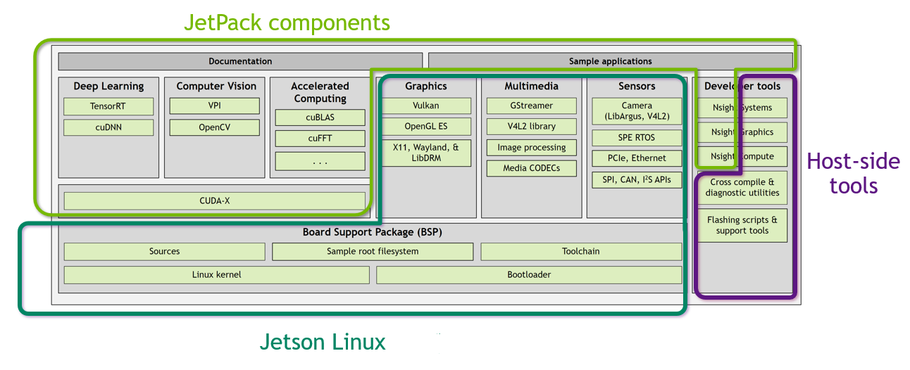

Jetson Software Architecture#
The following diagram shows the NVIDIA® Jetson™ Linux architecture.

The following sections describe the components of each module. Many of the components’ names are links to the component’s primary documentation, either in this Developer Guide or elsewhere. Some components have separate links with additional description.
Documentation#
This Developer Guide is the central component of the Jetson Linux documentation. It describes the architecture of Jetson Linux and provides information about how to use its features.
The Jetson Linux API Reference provides detailed documentation on Jetson Linux APIs and API extensions that you can use to help you develop applications.
Many other documents provide information about other matters that bear on application development with Jetson Linux, such as data sheets for the various Jetson processing modules and user guides for the developer kits for the modules. Most of these documents, and others, may be accessed through one or more of:
The Related Documentation topic of this Developer Guide
The Jetson Download Center, a source for both software and documentation that supports the NVIDIA Jetson group of products
The Jetson Software Documentation section of the NVIDIA documentation web site
The Deep Learning section of the NVIDIA Developer web site
Sample Applications#
Multimedia sample source code and applications: Sample source code for performing multimedia processing in Jetson Linux.
Other sample applications are mentioned throughout this Developer Guide.
Deep Learning Components#
The Jetson group of products are specifically designed for use in Deep Learning, a type of artificial intelligence which enables computing devices to “learn” how best to handle a particular class of problem through experience.
NVIDIA® TensorRT™: NVIDIA TensorRT provides a high-performance neural network inference engine for production deployment of deep learning applications. It can be used to optimize, validate, and deploy trained neural networks for inference to the Jetson platform. The Multimedia API provides samples that use this engine.
NVIDIA® cuDNN™: NVIDIA cuDNN provides a GPU-accelerated library of primitives for deep neural networks. cuDNN provides highly tuned implementations for standard routines such as forward and backward convolution, pooling, normalization, and activation layers.
NVIDIA® Triton™: NVIDIA Triton is an open-source inference serving software that helps standardize model deployment and execution and delivers fast and scalable AI in production.
Computer Vision#
Computer vision concerns capturing and processing images and video streams from sensors (cameras), tracking features, and performing various types of transformation such as dewarping and color transformation.
Vision Programming Interface (VPI): A software library that implements computer vision and image processing algorithms on multiple hardware accelerators present in Jetson modules.
OpenCV: Provides a version of OpenCV that NVIDIA has optimized specifically for the Jetson platform. It contains Jetson-specific optimizations that enable it to run faster than the OpenCV implementation.
OpenCV documentation may be found on the OpenCV documentation web site. General information is on the opencv.org primary web site.
Accelerated Computing#
Accelerated computing provides highly optimized libraries which applications may use to execute computation-intensive primitives in parallel on the GPU.
Graphics#
Jetson Linux offers many types of support for graphics in your applications.
Vulkan®: A low-level API that gives direct access to the GPU to developers.
OpenGL® ES: A cross-platform API for full-function 2D and 3D graphics on embedded systems.
X Driver: A GPU-accelerated implementation of X driver.
Wayland: GPU-accelerated implementation of Weston, a compositor based on Wayland protocol.
LibDRM: A library that provides access to the Linux Direct Rendering Manager (DRM). It consists of a driver and a user space library. The Jetson Linux implementation uses a GPU to accelerate its operations. See the description of drm-nvdc-docs.h in the Jetson Linux API Reference.
Multimedia#
Multimedia components support video stream processing and other types of multimedia processing.
Gstreamer: Provides a higher-level multimedia API. This framework provides the same types of capabilities as the Multimedia API, but at a higher level.
The GStreamer framework is included in the Jetson Linux distribution. It is installed by SDK Manager.
V4L2 library: Supports the V4L2 (Video for Linux, version 2) API as an extension to the Multimedia API; includes a video converter, decoder, and encoder.
Sensors#
Sensor components capture input from sensors (cameras) and perform the initial stages of processing on them. They provide high-level building blocks for implementing sensor processing, and provide GPU acceleration to many steps.
Camera (Libargus/V4L2): A low-level API based on the camera core stack.
SDK Manager installs this component as part of the Multimedia API which provides a collection of APIs that supports flexible application development with better control over the underlying hardware blocks.
SPE RTOS: Provides software access to the Sensor Processing Engine (SPE), a component of a Jetson module’s ARM® Cortex™-R5 microcontroller that supports hardware-accelerated sensor input processing.
PCI/Ethernet:
SPI/CAN/I2 S APIs:
CUDA-X#
NVIDIA® CUDA® is a parallel computing platform that makes it easy to use a GPU for general purpose computing. It is particularly useful for implementing graphical applications. It can be used with any of several programming languages.
CUDA‑X is a package that includes CUDA and CUDA-based implementations of several common graphics-oriented tasks.
Board Support Package#
The Jetson Linux Board Support Package (BSP) contains all of the software you need to develop and run applications with Jetson Linux. The current Jetson Linux BSP is available from the Jetson Linux page on the NVIDIA Developer Site. It includes:
Sources: Jetson Linux is an open source product. Source code is included in the Jetson Linux distribution.
Sample root file system: A root file system derived from the Ubuntu distribution. You can use this root file system as a basis for developing one that is tailored to your application.
Jetson Linux toolchain: A suite of software components used to developer Jetson Linux applications.
Jetson Linux Kernel: A version of the Ubuntu Linux kernel that NVIDIA has optimized for use on Jetson devices.
Bootloader: Boot software for an operating system on a Jetson device.
Developer Tools#
NVIDIA provides a full suite of developer tools for writing, building, and debugging Jetson Linux applications.
NVIDIA® Nsight™: NVIDIA Nsight profiles application execution across multiple CPU cores and helps you improve application performance by identifying slow parts of your code.
Runs on the Linux host computer. Supports all Jetson products.
Nsight Graphics: Debugs and profiles OpenGL and OpenGL ES graphics programs through a console interface.
Nsight Graphics runs on the Linux host computer. It supports all Jetson products.
Nsight Systems Compute: Interactively profiles kernel operations for CUDA applications. Provides detailed performance metrics and API debugging via a user interface and command line tool.
Cross-compiler and diagnostic utilities: Jetson Linux BSP includes a toolchain for compiling applications on an Ubuntu host system, and a suite of development tools for debugging and optimizing them.
Flashing Support: Scripts and associated tools to assist in flashing software to a Jetson device.
Other Components#
Jetson Linux user space drivers: NVIDIA drivers that run in user space.
Multimedia API (MMAPI): A collection of lower-level APIs that support flexible application development. Multimedia API includes:
Libargus for imaging applications
Buffer API for buffer allocation, management, and sharing
NVOSD for on-screen display
Application framework APIs (optional)
MMAPI also includes samples that demonstrate image processing with CUDA, and object detection and classification with cuDNN, TensorRT, and OpenCV4Tegra.
MMAPI is for developers who use a custom framework or wish to avoid a framework like GStreamer.
MMAPI must be separately downloaded from the NVIDIA Jetson Download Center. It is not included in Jetson Linux BSP.
CUDA Toolkit#
Toolkit for Ubuntu host with cross deployment support: CUDA toolkit for the host.
CUDA Toolkit: CUDA toolkit for use with the Jetson Developer Kit.
CUDA MPS is supported starting in release 36.4. If you are upgrading from an older release, please install the MPS executable files (
nvidia-cuda-mps-controlandnvidia-cuda-mps-server) by running the following command:$ sudo apt-get install nvidia-l4t-cuda-utils
Graphics#
JetPack SDK#
NVIDIA JetPack™ SDK documentation: Provides details for your development on the Jetson platform.
Samples: Designed to give you hands-on, practical examples for using the Jetson development platform.